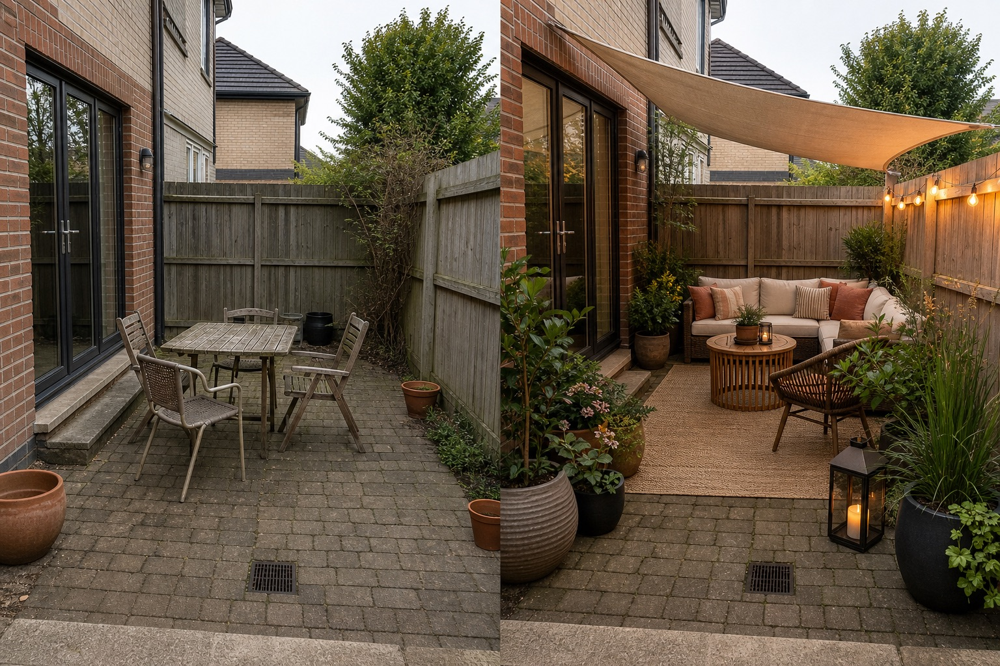

Begin with reversible changes
Group existing or movable furniture around one use, then test containers, a removable rug, portable light, and freestanding shade without blocking doors, drains, or circulation.
Start by deciding whether the problem is atmosphere, everyday use, or the patio itself. Movable pieces can test a layout; surface or structural work should follow only when measured site conditions justify it.
Editorially reviewed July 22, 2026.
This AI-generated comparison is inspiration, not a measured plan, cost estimate, product recommendation, planting specification, or construction guarantee.

Group existing or movable furniture around one use, then test containers, a removable rug, portable light, and freestanding shade without blocking doors, drains, or circulation.
Consider cleaning, repairing joints, repainting permitted surfaces, or improving non-structural screening only after checking the substrate, drainage, lease or ownership limits, and maintenance.
Changes to levels, fixed roofs, drainage, walls, steps, utilities, or extensive surfacing require measurements, local approvals, product specifications, and appropriate professional advice.
The same visual direction can involve very different labor, access, preparation, product, disposal, permit, and repair needs. Use reversible, mid-range, and structural as decision categories—not price bands—and obtain local written estimates before committing.
Record doors, thresholds, steps, furniture footprints, chair clearance, gates, storage, utilities, and an unobstructed route; never infer dimensions from the concept.
Keep drains and falls working, and note runoff, ponding, sun, wind, heat, glare, shade, and seasonal exposure before choosing surfaces or shelter.
Verify slip resistance, trip edges, fire or electrical considerations, accessibility, structural loads, leases, boundaries, and local permit requirements.
Compare cleaning, storage, weather protection, repairs, watering, drainage from pots, and plant suitability, mature size, invasive status, and pet or child safety locally.
Define one main use, clear the route, group the furniture, and test movable shade, lighting, textiles, or containers. These reversible steps reveal whether the layout works before permanent work begins.
Separate movable purchases, repair or finish work, and structural changes, then request current local prices for the exact products, labor, access, preparation, disposal, and approvals involved. An image cannot supply a reliable total.
Seek appropriate local help when changing levels, drainage, fixed structures, walls, steps, utilities, electrical work, extensive surfaces, or anything governed by permits, leases, boundaries, or safety requirements.
Upload a level, wide photo to compare reversible layout directions before choosing products or structural work.
AI-generated visualizations are concepts. Verify measurements, site conditions, local rules, product information, prices, and professional requirements before buying or building.